library(tidyverse)
library("gridExtra")
library(tidyverse)
library(knitr)
library(psych)
library(moments)
load("lfs.rda")3 Describing Continuous Data
3.1 Introduction
In unit 2 we continue to explore the basics of data analysis using RStudio. While last unit we worked with categorical data (as you did last year in SLSP2010), in this unit we will focus the session on learning how to describe continuous data.
We will be analysing the Labour Force Survey (LFS) to describe:
- how earnings are distributed in the British Labour Market,
- the extent of raw differences in average pay between men and women - a.k.a. the gender pay gap.
Analytically, we will concentrate on the following techniques
- Numerical Summaries:
- Mean, median and mode
- Maximum, minimum and range
- Quartiles & Inter-quartile Range
- Variance and Standard deviation
- Visualisation
- Boxplots
- Histograms
- Density Plots
3.2 Basics: Continuous variables
3.2.1 Definition
A variable is continuous when it can take any value within a measurement scale (including decimals), and when the difference between each pair of adjacent values is constant and has real meaning - i.e. the difference between £4 and £5 is the same as between £1,954,327 and £1,954,328.
With “Years in education” we can say that a person with 10 years of schooling has been in education 4 more years than someone with 6 years and 3 years less than someone with 13 years.
With “How many hours of housework do you undertake per week” we could have answers that range from 0 to potentially 168 hours - i.e. from someone who doesn’t lift a finger (realistic) to someone who does not sleep or eat because they feel compelled to dust doorframes with a toothbrush and painstakingly fold bed linen in origami-like shapes (implausible?). Notice this could include values with decimals, as in “I spend 4.5 hours cleaning every week”
3.2.2 Types of continuous variables
We will normally consider to types of continuous variables: interval and ratio.
Interval variables do NOT have an absolute zero with substantive meaning (0°C is not absence of temperature - only the temperature at which water freezes). This means that it makes sense to estimate averages (average minimum temperature in October is 7° in Leeds and 14° in Barcelona) but not ratios (we cannot say that Barcelona has an average minimum temperature that’s twice as high as Leeds).
Ratio variables have an absolute zero with substantive meaning (0 inhabitants, 0 hours dedicated to housework per week, etc.) so it is possible to measure both averages AND ratios. For instance, if the cities of Leeds and Barcelona have populations of 474,632 and 1.6 million people respectively, we can say that Barcelona has a population roughly 3.4 times larger than that of Leeds.
3.3 Describing a continuous distribution:
Describing the distribution of a continuous variable involves identifying its average or centre and its dispersion or spread. Additionally, we may also want to want to evaluate its shape.
3.3.1 The Mean:
The main measures of central tendency or average are the mean and the median.
For a variable called \(x\) with \(n\) number of observations the mean is calculated as follows:
\[\bar{x} = \sum_{i=1}^{n}\left( \frac{x_i}{n} \right)\]
In English, this formula means that the sample mean \(\bar{x}\) (pronounced x bar) is equal to the sum \(\sum_{i=1}^{n}\) of all individual values \(x_i\) of the variable \(x\) divided by the total number of observations or sample size \(n\).
Let’s see this graphically. Suppose we have recorded the marks for QSR:
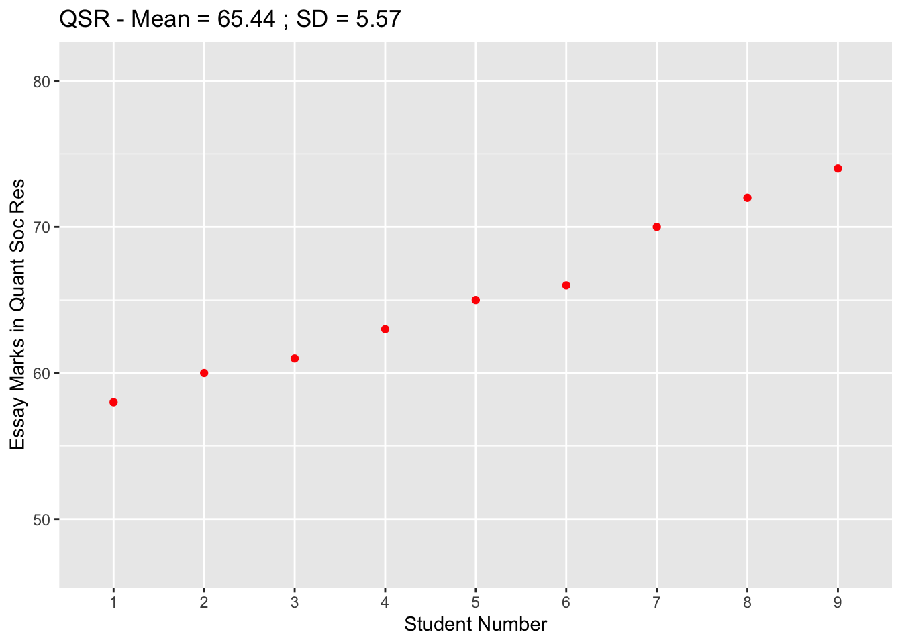
The mean will be equal to the sum of all those marks divided by the number of students:
\[\bar{x} = \frac{58 + 60 + 61 + 63 + 65 + 66 + 70 + 72 + 74}{9} = 65.44 \]
So the average mark for this module is just over 65%. To get a sense of where this fits, let’s plot a line to indicate the mean:
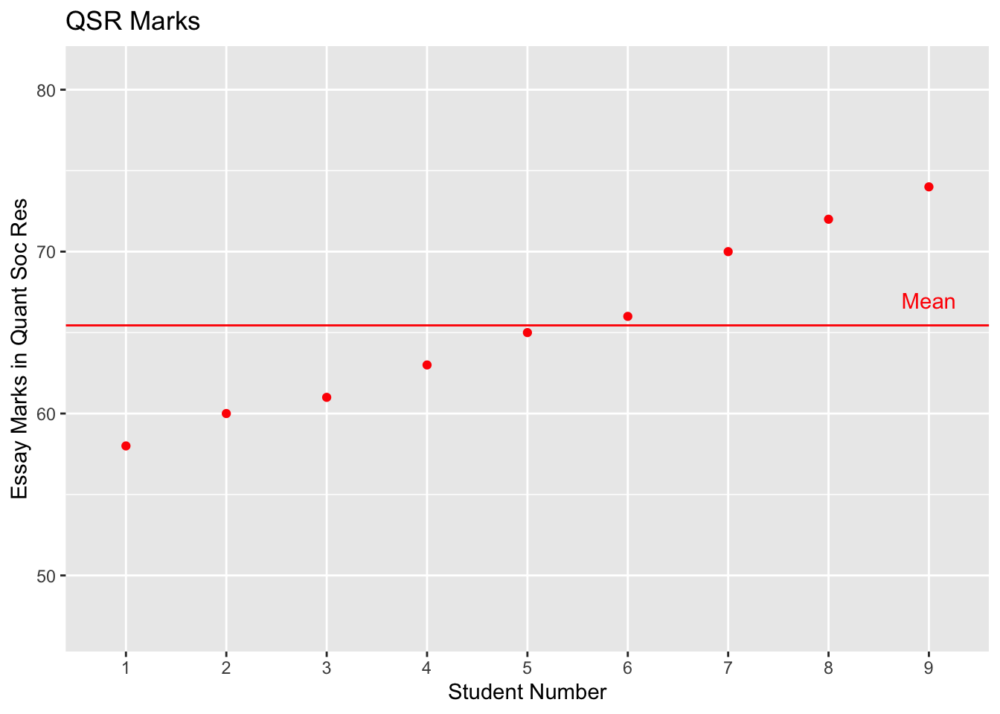
3.3.2 Median
The median or 50th percentile captures that value which lies exactly in the middle of the distribution if ordered from minimum/lowest to maximum/highest, e.g. that has 50% of the observations on each side. There is no obvious formula to calculate the median, but it involves ordering the values in a variable from lowest to highest and finding the middle point. In the QSR marks the median:
58, 60, 61, 63, 65, 66, 70, 72, 74
Just a note of caution:
- when the number of data points is odd then this is straightforward, because there is a clear middle.
- when the number of data points is even then there is no middle, so we take the average between the two values in the centre.
Graphically then:

A key feature of the median is that, unlike the mean, it is insensitive - i.e. it does not vary - as a result of the presence of extreme values or outliers, which are data points that are unusually far from the centre of the distribution. As a result, the mean and the median for any given variable may or may not be the same (or more or less close) depending how symmetrical the shape of its distribution is. A perfectly symmetrical variable will have exactly the same median and mean. An asymmetrical or skewed distribution (where there is a greater number of observations on one side of the mean than on the other) then the median and mean will be different. This occurs because the extreme values that skew the data to the right or the left pull the mean towards themselves and away from the median. You can see this more clearly in the following table and plot that displays three distributions:
A left-skewed distribution with a concentration of cases in the higher values and a long left tail along the lower values of the variable (mean < median)
A symmetrical or bell-shaped distribution that has exactly half of the observations on each side of the average (mean = median)
A right-skewed distribution with a large concentration of cases in the lower values and a long right tail along the higher values of the variable (mean > median)
| distr | median | mean |
|---|---|---|
| left | 0.8202215 | 0.8004561 |
| right | 0.1803335 | 0.2004595 |
| sym | 0.5002365 | 0.4999391 |
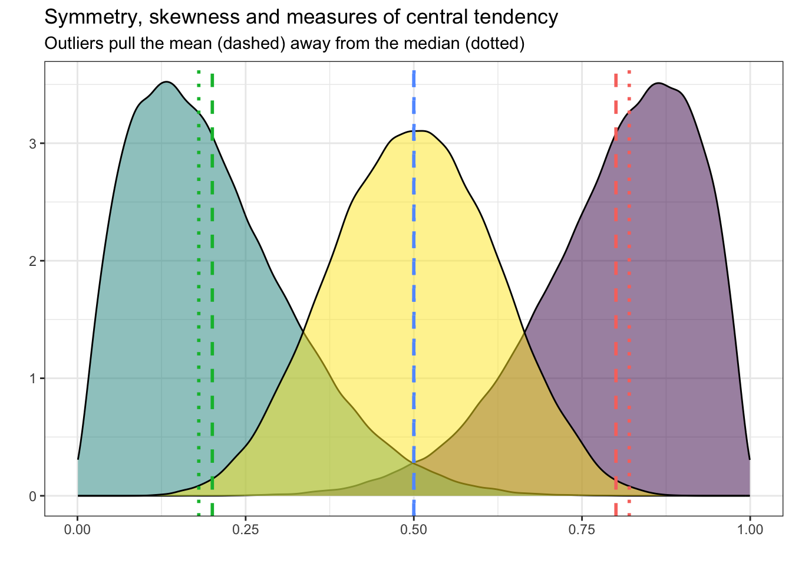
3.3.3 Dispersion:
In terms of spread we will rely on a number of measures:
- Range (Maximum - Minimum)
- Interquartile range or IQR (75% percentile - 25% percentile)
- Standard deviation and Variance
3.3.3.1 Range and interquartile range
The range of a variable indicates the distance between the minimum value and the maximum value the variable takes and is easily calculated as follows:
\[\text{Range} = \text{Maximum value} - \text{Minimum Value}\]
Notice how the range tells us virtually nothing about the actual distribution of values - i.e. where the observations are concentrated along that range - only how far the highest and lowest value are from each other.
Unlike the range, the Inter-Quartile Range or IQR tells us something much more interesting about the distribution of a variable: namely, the difference between the two values that delimit the interval containing the central 50% of the observations - i.e. the range between the value that has 25% of observations below (called the 25th or 1st quartile) and the value that has 25% of observations above (called the 75th or 3rd quartile),
\[\text{IQR} = \text{75th percentile} - \text{25th percentile}\]
To understand the IQR, it is useful to visualise how it relates to an actual distribution. In the graph below, you can see three roughly symmetrical distributions with the same number of observations (n = 100,000) and lines that represent the 25th percentile (dashed) and the 75th percentile (dotted) for each. Notice how the greater the concentration of observations at the centre of the distribution (in other worsds, the relative height of the peak) the narrower the IQR or the difference between 25th and 75th percentiles will be:
set.seed(666)
N <- 100000
norm1 <- rnorm(N,0,1)
norm2 <- rnorm(N,-4, 2)
norm3 <- rnorm(N,4,3)
dist <- as_tibble(cbind(norm1, norm2, norm3))
pct_sum <-
dist |>
pivot_longer(cols = norm1:norm3,
names_to = "distr") |>
group_by(distr) |>
summarise(pct25 = quantile(value, .25),
pct75 = quantile(value, .75),
iqr = IQR(value))
pct_sum |>
kable()| distr | pct25 | pct75 | iqr |
|---|---|---|---|
| norm1 | -0.663445 | 0.678242 | 1.341687 |
| norm2 | -5.348653 | -2.663841 | 2.684813 |
| norm3 | 1.975112 | 6.013470 | 4.038358 |
dist |>
pivot_longer(cols = norm1:norm3,
names_to = "distr") |>
ggplot(aes(x = value, fill = distr)) +
geom_density(alpha = 0.5) +
geom_vline( data = pct_sum ,
aes(xintercept = pct25, color = distr),
linetype="dashed", linewidth=1) +
geom_vline( data = pct_sum ,
aes(xintercept = pct75, color = distr),
linetype="dotted", linewidth=1) +
scale_fill_viridis_d() +
theme_bw() +
theme(legend.position = "none") +
labs( x = "", y = "",
title = "Understanding the IQR",
subtitle = "A measure of how concentrated observations are in the middle")
3.3.3.2 Standard deviation (via the variance)
In addition of measuring the overall spread of the data, we often want to how much do individual observations vary from the average or centre of the distribution. The variance, which we denote with \(s^2\) captures precisely that quantity and is measured with the following equation:
\[s^2 = \frac{\sum_{i=1}^{n} (x_i - \bar{x})^2}{n-1}\]
Notice that many elements in this equation were already in the previous one: there is the sum operator \(\sum_{i=1}^{n}\), there is a term for individual observations \(x_i\), there is the mean \(\bar{x}\) and there is the sample size \(n\).
So what does this mean? It is basically saying:
- \((x_i - \bar{x})\): Take away the mean \(\bar{x}\) from each individual observation \(x_i\) to obtain the errors or residuals. Graphically this is:
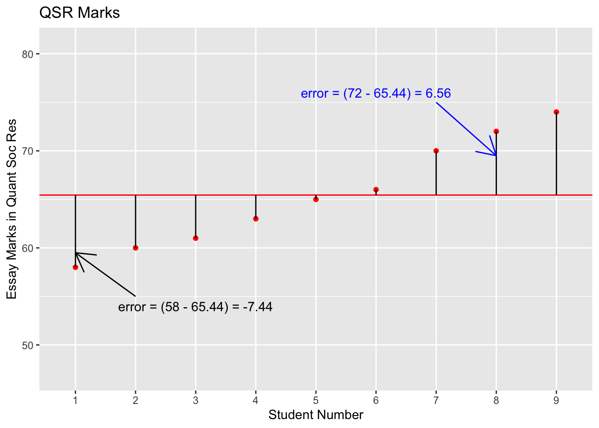
\((x_i - \bar{x})^2\): then square the errors or residuals
\(\sum_{i=1}^{n} (x_i - \bar{x})^2\): then sum the squared errors for all the observations;
and finally, divide the sum of squared errors by \(n-1\).
The variance is therefore an average of the squared errors - in other words, the variance is the average squared distance of the data points from the mean. The problem is that by being measured in squared units, it is not straightforward to interpret!
To make the variance easier to interpret - basically, to transform it into the same units in which the mean is originally measured - we take its square root to calculate the standard deviation \(s\): \[s = \sqrt{s^2} = \sqrt{\frac{\sum_{i=1}^{n} (x_i - \bar{x})^2}{n-1}} \]
The standard deviation indicates the average distance between the data points and the mean in the natural units of our variable.
Let’s do this manually with the QSR data:
3.4
| Marks | Mean | Error | Squared error | |
|---|---|---|---|---|
| 58.00 | 65.44 | -7.44 | 55.35 | Total error |
| 60.00 | 65.44 | -5.44 | 29.59 | 248.22 |
| 61.00 | 65.44 | -4.44 | 19.71 | |
| 63.00 | 65.44 | -2.44 | 5.95 | Variance |
| 65.00 | 65.44 | -0.44 | 0.19 | 31.03 |
| 66.00 | 65.44 | 0.56 | 0.31 | |
| 70.00 | 65.44 | 4.56 | 20.79 | Standard deviation |
| 72.00 | 65.44 | 6.56 | 43.03 | 5.57 |
| 74.00 | 65.44 | 8.56 | 73.27 |
3.4.0.1 Comparing dispersion: QSR vs FS
qsrplot3<-ggplot(data=marks, aes(x=student, y=qsr)) +
geom_point(color="red") + geom_hline(yintercept = mean(qsr), color="red") +
geom_segment(aes(x=student, y=qsr, xend = student, yend = mean(qsr))) +
ylim(47, 81) +
xlab("Student Number") +
ylab("Essay Marks in Quant Soc Res") +
ggtitle("QSR (65.44, 5.57)")
foucplot3<-ggplot(data=marks, aes(x=student, y=fouc)) +
geom_point(color="blue") + geom_hline(yintercept = mean(fouc), color="blue") +
geom_segment(aes(x=student, y=fouc, xend = student, yend = mean(fouc))) +
ylim(47, 81) +
xlab("Student Number") +
ylab("Essay Marks in Foucauldian Studies") +
ggtitle("FS - (65.44, 10.09)")
grid.arrange(qsrplot3, foucplot3, ncol=2)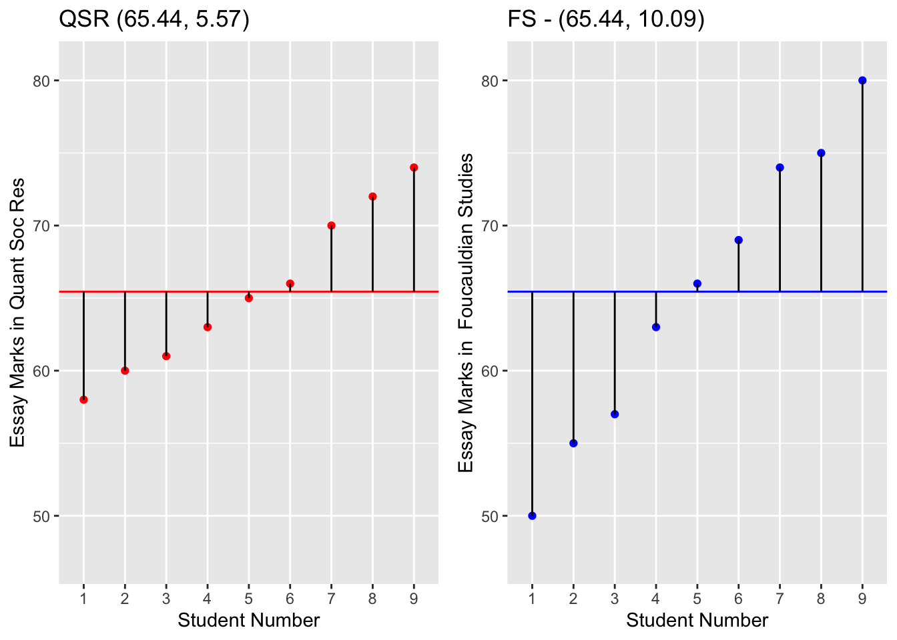
3.5 Analysing the distribution of a continuous variable:
Recall that the objective of this workshop is to learn how to describe a continuous variable, in this case the hourly pay of British workers. This variable in the LFS is called HOURPAY.
To get the measures of central tendency in R we use the functions mean() and median(). A function is essentially a set of instructions that is applied to an object (e.g. a variable) to produce something else (e.g. another variable, a summary of that variable, etc). In this case we will ask R to produce the mean and the median of a variable in a dataset. This is the syntax:
# calculates the mean of variable HOURPAY in the dataset lfs
mean(lfs$HOURPAY)[1] -6.496328# calculates the median
median(lfs$HOURPAY) [1] -9There are also a number of commands to calculate several basic descriptive statistics in RStudio at once - summary() (base package), and describe() (psych package):
summary(lfs$HOURPAY) Min. 1st Qu. Median Mean 3rd Qu. Max.
-9.000 -9.000 -9.000 -6.496 -9.000 1058.000 describe(lfs$HOURPAY) vars n mean sd median trimmed mad min max range skew kurtosis se
X1 1 102059 -6.5 8.39 -9 -8.76 0 -9 1058 1067 24.53 2646.1 0.03Notice the following:
Variable lfs$HOURPAY has negative values - what do these mean?
Variable lfs$HOURPAY has also very high values - £1058 per hour
What are the consequences of analysing the data as is?
Let’s recode the data to remove the highest values and define the negative values as missing (NA) and cap the maximum hourly wage to 90 pounds - i.e. that all wages higher than £90 per hour are converted to £90.
lfs$HOURPAY[lfs$HOURPAY<0]<-NA
lfs$HOURPAY[lfs$HOURPAY>90]<-90Please note this solution is used here purely for analytical convenience so that it is easier for us to visualise and understand the distribution of earnings in this workshop. In your own analyses, you need to think more carefully about what to do with outliers, which will be different for different datasets, and should not just treat what we did here as a rule.
Now we can run the analyses again:
# calculates the mean of variable HOURPAY in the dataset lfs
mean(lfs$HOURPAY, na.rm = TRUE)[1] 12.81886# calculates the median
median(lfs$HOURPAY, na.rm = TRUE) [1] 10.38We can then use the summary function which will display in order the minimum, the 1st quartile or 25% percentile, the median or 50% percentile, the mean, the 3rd quartile or 75% percentile, the maximum and the number of missing values. Notice that the mean is almost £2.50 per hour greater than the median, and that the first 75% of the sample earn less than £15.88 per hour.
summary(lfs$HOURPAY) Min. 1st Qu. Median Mean 3rd Qu. Max. NA's
0.15 7.19 10.38 12.82 15.88 90.00 90424 You can get more detailed quantiles, for instance the 90%, 95% and 99%, and the 99.9%
quantile(lfs$HOURPAY, c(.90, .95, .99, .999), na.rm = TRUE) 90% 95% 99% 99.9%
22.76000 28.59000 45.55000 81.60876 Notice two things: (a) 95% of hourly wages are still below £30, so that the distribution of the vast majority of hourly wages are concentrated within a narrow range; (b) that despite capping incomes at 90 pounds, that value is still much higher than the earning per hour of 99.9% of the samples. Indeed, you can see that as we get closer and close to the top the incomes, hourly wages rise much faster each percentile.
You may also want to calculate the range as the difference in values between maximum and minimum values and the interquantile range (IQR) as the difference in values of the 25% and the 75% percentiles. The latter gives you a sense of the range of wages in the central half of the distribution around the median or 50% percentile:
#find max and min
range(lfs$HOURPAY, na.rm = TRUE)[1] 0.15 90.00# calculate range
max(lfs$HOURPAY, na.rm = TRUE) - min(lfs$HOURPAY, na.rm = TRUE)[1] 89.85#calculate percentiles for IQR
quantile(lfs$HOURPAY, c(.25, .75), na.rm = TRUE) 25% 75%
7.19 15.88 # calculate IQR
IQR(lfs$HOURPAY, na.rm = TRUE)[1] 8.69The describe function produces other indicators of interest: the standard deviation, the range, and measure of skewness (tail of the distribution) and kurtosis (the height of the curve)
describe(lfs$HOURPAY) vars n mean sd median trimmed mad min max range skew kurtosis se
X1 1 11635 12.82 8.54 10.38 11.45 5.63 0.15 90 89.85 2.63 12.41 0.08We can also get a sense of the shape of the distribution by measuring the skewness (lack of overall simmetry). A positive skewness value indicates a right skewed (long right tailed) distribution, a negative skewness value indicates a left skewed (long left tailed)
skewness(lfs$HOURPAY, na.rm = TRUE)[1] 2.630888Many of these measures can also be calculated using tidyverse code, in particular by employing the summarise() function from the dplyr package:
lfs |>
drop_na(HOURPAY) |> # removes all missing values
summarise(n_hp = n(),
mean_hp = mean(HOURPAY),
median_hp = median(HOURPAY),
sd_hp = sd(HOURPAY),
min_hp = min(HOURPAY),
max_hp = max(HOURPAY),
iqr_hp = IQR(HOURPAY)) n_hp mean_hp median_hp sd_hp min_hp max_hp iqr_hp
1 11635 12.81886 10.38 8.543271 0.15 90 8.693.6 Analysing the distribution of a continuous variable by a grouping variable:
Often we will want to examine how the descriptive statistics of a continuous variable differ across subgroups in our data. Here we compare the means and standard deviations of men and women’s pay to gauge what the raw differences are. We can achieve this in many different ways:
#using by()
by(lfs$HOURPAY,lfs$SEX, describe)lfs$SEX: Does not apply
NULL
------------------------------------------------------------
lfs$SEX: No answer
NULL
------------------------------------------------------------
lfs$SEX: Male
vars n mean sd median trimmed mad min max range skew kurtosis se
X1 1 5525 14.24 9.56 11.56 12.73 6.46 0.44 90 89.56 2.43 10.14 0.13
------------------------------------------------------------
lfs$SEX: Female
vars n mean sd median trimmed mad min max range skew kurtosis se
X1 1 6110 11.53 7.27 9.4 10.43 4.67 0.15 90 89.85 2.75 14.91 0.09We can do the same using tidyverse code:
# using the tidyverse group_by()
lfs |>
drop_na(HOURPAY) |>
group_by(SEX) |>
summarise(n_hp = n(),
mean_hp = mean(HOURPAY),
sd_hp = sd(HOURPAY),
median_hp = median(HOURPAY),
min_hp = min(HOURPAY),
max_hp = max(HOURPAY),
iqr_hp = IQR(HOURPAY))# A tibble: 2 × 8
SEX n_hp mean_hp sd_hp median_hp min_hp max_hp iqr_hp
<fct> <int> <dbl> <dbl> <dbl> <dbl> <dbl> <dbl>
1 Male 5525 14.2 9.56 11.6 0.440 90 9.72
2 Female 6110 11.5 7.27 9.40 0.150 90 7.673.7 Visualising continuous data
While numeric statistics are informative and precise, it may be difficult to imagine what they distribution of the data looks like from those numbers alone. Plots allow us to represent data visually. There are many types of graph we could use, but we will focus on 3: boxplots, histograms and density plots:
3.7.1 Boxplots
Boxplots allow us to represent the distribution of the variable of interest by plotting 5 fundamental features:
- Maximum
- 75% percentile
- Median
- 25% percentile
- Minimum
# draw a boxplot with HOURPAY on the Y-axis
ggplot(data=lfs, aes(y=HOURPAY, x="")) + geom_boxplot() +
ylab("Pay per hour")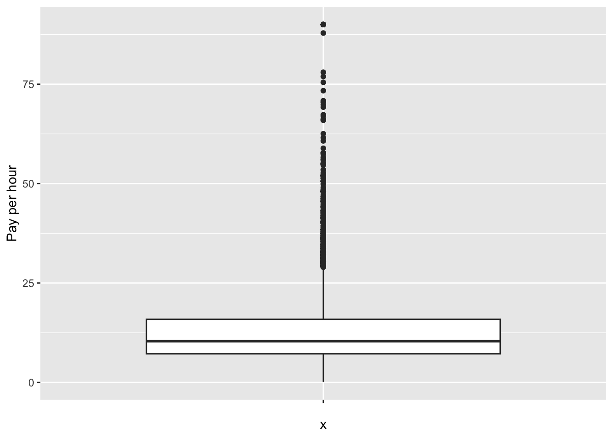
It’s worth being a bit careful with boxplots and the 5 percentile-based summary measures as they can sometimes mask the underlying distribution in the data. An option is to overlay a boxplot on top of the raw data points (with a little bit of added noise to spread them).
# draw a boxplot with HOURPAY on the Y-axis
lfs |>
ggplot(aes(y=HOURPAY, x="")) +
geom_jitter(alpha = .1) +
geom_boxplot(colour = "darkgreen", alpha = 0.5) +
ylab("Pay per hour")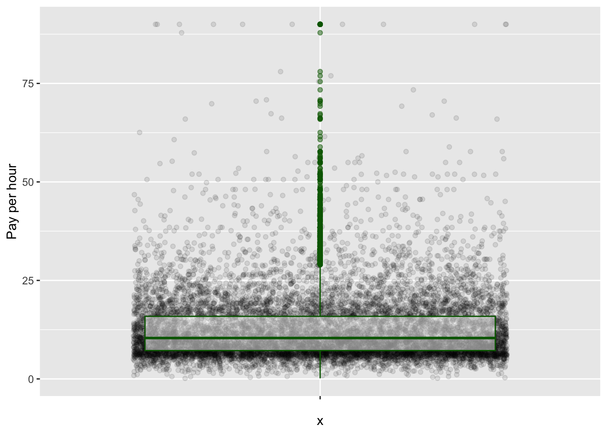
3.7.2 Histograms and density plots:
Histograms and density plots allow us to represent the shape of the distribution of a variable of interest.
A histogram plots the frequency of observations within a given interval of a continuous variable - how many people fall within two given income levels. We use the geom_histogram() in the ggplot2 framework to produce them. Notice that different interval widths (in this case, income brackets) will produce different shapes. R will automatically choose the width of the intervals, but you can customise it if you wish.
ggplot(data=lfs, aes(x=HOURPAY)) + geom_histogram() +
xlab("Pay per hour") +
ylab("Number of observations") 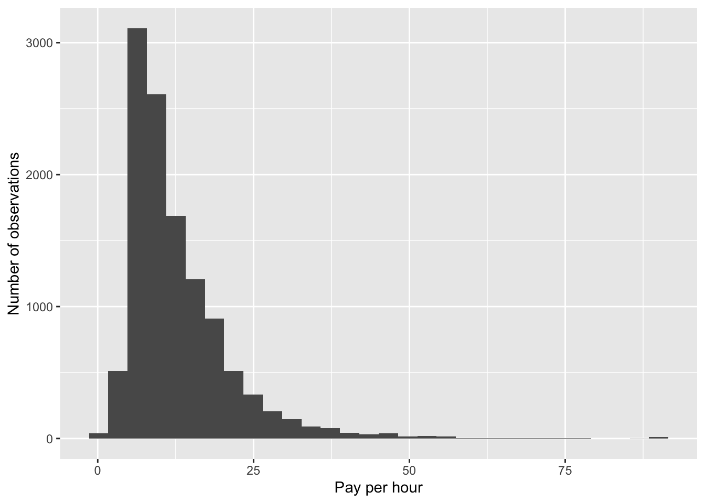
A density plot is similar to a histogram, but instead of plotting frequencies it plots probability densities. In practice, you could think of a density plot as a smoothed histogram whose shape does not depend on the choice of interval width. To produce it use the geom_density() option.
ggplot(data=lfs, aes(x=HOURPAY)) + geom_density() +
xlab("Pay per hour") +
ylab("Probability density")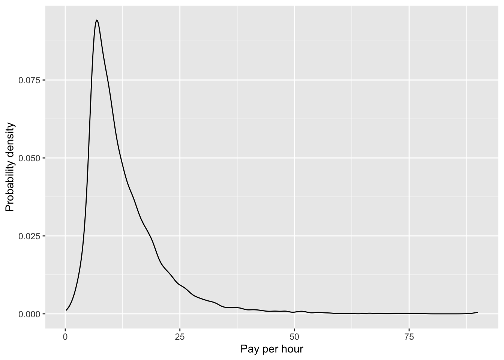
We can add extra layers to our plots to display additional information. It may be interesting to add referencing lines
#define the mean of hourly pay
meanpay <- mean(lfs$HOURPAY, na.rm = T)
#define the median of hourly pay
medianpay <- median(lfs$HOURPAY, na.rm = T)
ggplot(data=lfs, aes(x=HOURPAY)) + geom_density() +
geom_vline(xintercept=meanpay, colour="blue") + # vertical line for the mean in blue
geom_vline(xintercept=medianpay, colour="red") + # vertical line for the median in red
xlab("Pay per hour") +
ylab("Probability density")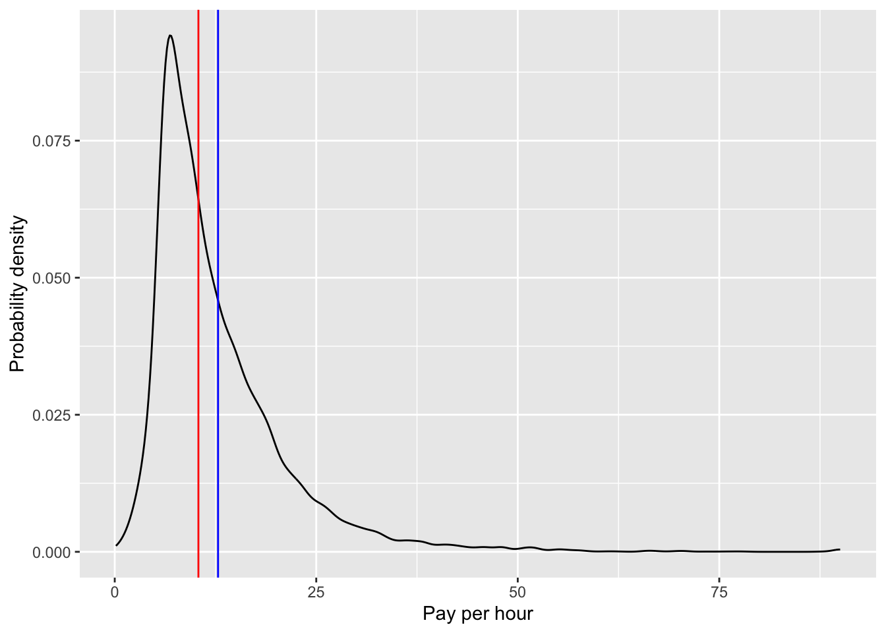
3.8 Visualising continuous data by a grouping variable
Now let us explore the differences in hourly pay between men and women. Notice that to do so we need to introduce the variable SEX in different parts of the syntax depending on the type of graph (and the shape and position of the variable)
We again use boxplots, histograms and density plots but we use different strategies to display the group differences. For instance we put one boxplot for each group side by side within the same pane:
# straightforward, include SEX as the variable that goes on the horizontal axis
ggplot(data=lfs, aes(y=HOURPAY, x=SEX)) +
geom_jitter(alpha = .1) +
geom_boxplot(colour = "orange", alpha = 0.3)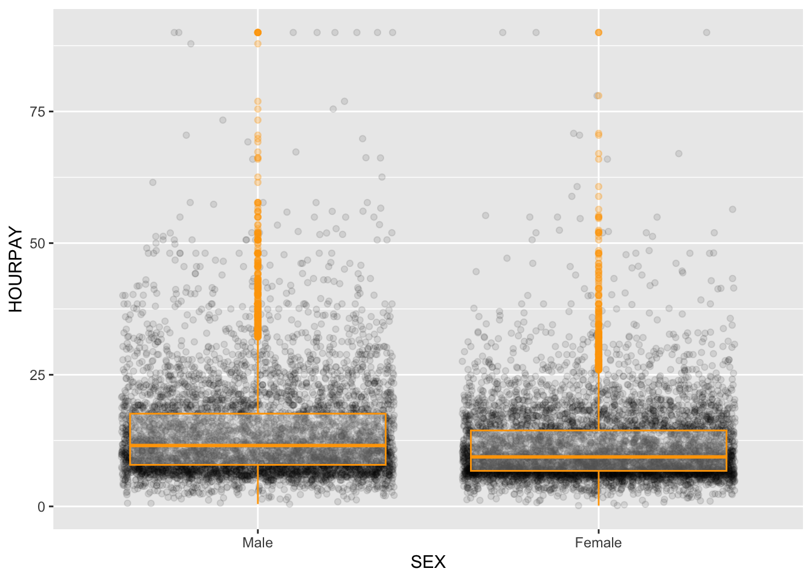
Here we will plot the histograms in separate panes side by side to avoid overlaying them (which means we would not be able to view the whole distribution for both groups). We do this using the facet_wrap() option:
# introduce sex as a facetting device, i.e. ask R to produce one graph per each sex
ggplot(data=lfs, aes(x=HOURPAY)) + geom_histogram() + facet_wrap(~SEX)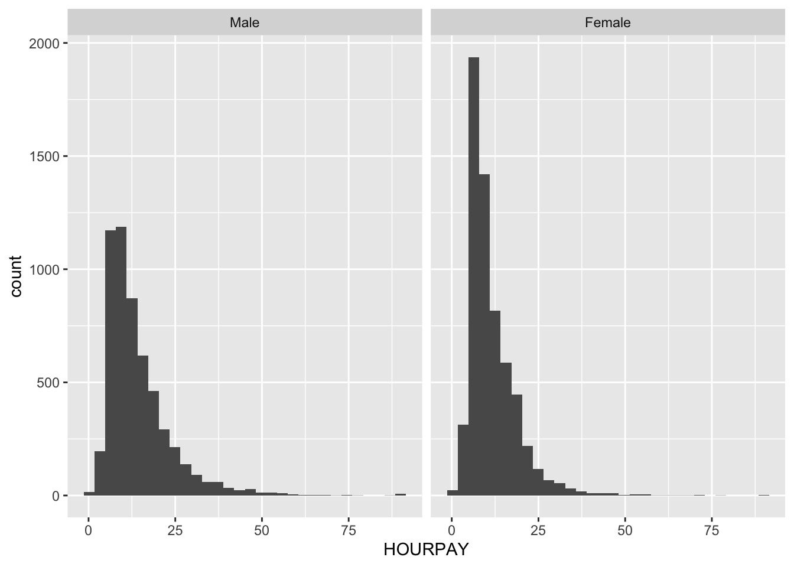
With density plots we can overlay them without losing information simply by specifying the colour of the lines according to the variable SEX:
# introduce sex as a factor to distinguish the male pay line and the female pay line.
ggplot(data=lfs, aes(x=HOURPAY, color=SEX)) + geom_density()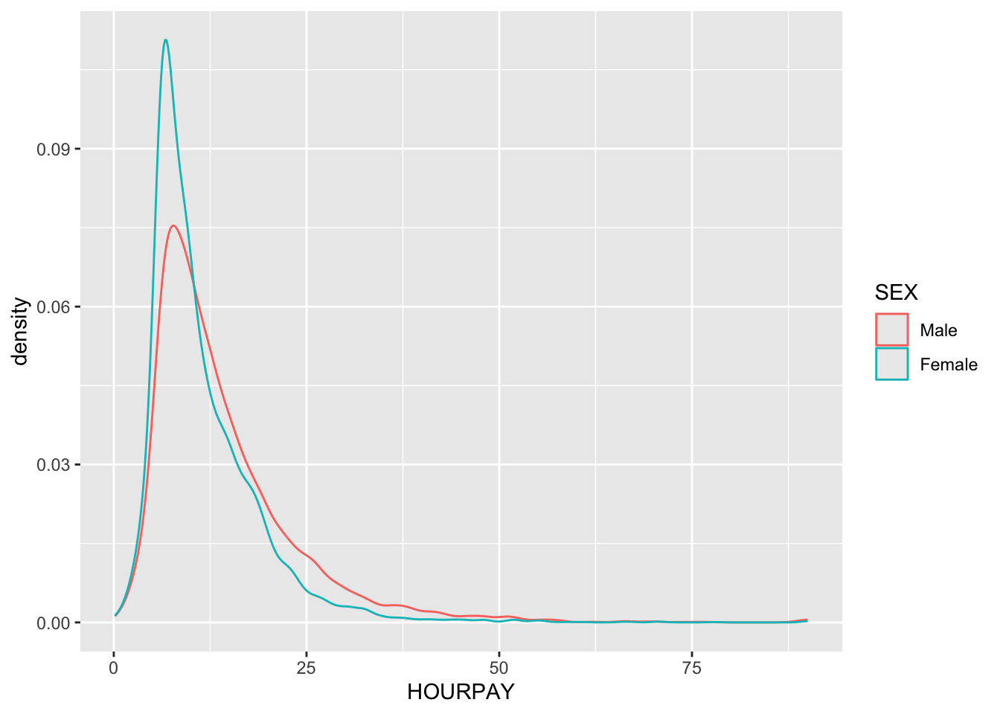
3.9 BONUS EXERCISE:
Now, conduct a similar set of analyses using the variable “TOTHRS”